Credit: Macaulay Library © Cornell Lab of Ornithology ML45127481
This work is licensed under a Creative Commons Attribution-NonCommercial-ShareAlike 4.0 International License (CC BY-NC-SA 4.0).
You are free to:
Share – copy and redistribute the material in any medium or format
Adapt – remix, transform, and build upon the material
Under the following terms:
Attribution – You must give appropriate credit, provide a link to the license, and indicate if changes were made.
NonCommercial – You may not use the material for commercial purposes.
ShareAlike – If you remix, transform, or build upon the material, you must distribute your contributions under the same license.
For more information, visit: https://creativecommons.org/licenses/by-nc-sa/4.0/
© 2025 Yogesh Wadadekar
______________________________________________________________________________________________________________________________________________________
___________________________________________________________________________________________________________________________________________________________________________________________________________________________
The University of Pune (Savitribai Phule Pune University) campus is a biodiversity hotspot spread across 411 acres (166.33 hectares) in the heart of Pune city. Located at 18.5529°N 73.8352°E, the campus sits at an elevation of approximately 560 meters above sea level.
The campus features diverse habitats that support a rich variety of birdlife. The landscape includes extensive wooded areas with native and exotic tree species, open grasslands, lawns, artificial water bodies, gardens, and building complexes. This mosaic of habitats provides excellent opportunities for both resident and migratory birds.
The university grounds host over 150 species of trees, creating a veritable urban forest. Native species like Banyan (Ficus benghalensis), Peepal (Ficus religiosa), Neem (Azadirachta indica), and Red Silk Cotton (Bombax ceiba) dominate the landscape, while ornamental and introduced species like African Blackwood (Dalbergia melanoxylon), Rain Tree (Samanea saman), Gulmohar (Delonix regia), and Copper Pod (Peltophorum pterocarpum) add to the diversity. This rich vegetation provides vital nesting sites, roosting areas, and food sources for various bird species.
The campus ecosystem faces various anthropogenic pressures that affect bird populations:
Regular vehicular movement along campus roads
Ongoing construction and development activities
Presence of a large student population
Regular maintenance activities including gardening and landscaping
Noise and dust pollution from nearby urban areas
Light pollution from campus buildings and facilities
Time of Day:
Early morning (6:00-9:00 AM): Peak activity as birds forage for breakfast
Late afternoon (4:00-6:30 PM): Second wave of feeding activity
Midday: Good for watching raptors soaring on thermal currents
Dusk: Best time to spot nocturnal species like owls becoming active
Seasonal Highlights:
Winter (November-February): Peak season with numerous winter visitors
Monsoon (June-September): Best for watching breeding activities
Summer (March-May): Good for observing resident breeding birds
Post-monsoon (October): Opportunity to spot passage migrants
Special thanks to the dedicated birdwatchers who have contributed extensively to documenting the avifauna of SPPU campus through eBird ( SPPU eBird Hotspot).
Their systematic observations have greatly enhanced our understanding of bird diversity and seasonal patterns on campus.
Essential Equipment:
Binoculars: 8x42 or 10x42 recommended for beginners
Field guide: I highly recommend Birds of the Indian Subcontinent by Grimmett, Inskipp & Inskipp
Notebook for recording observations
Useful Apps:
eBird: For recording sightings and exploring hotspots
Merlin Bird ID: Helps identify birds through photos or sounds
BirdNet: AI-powered bird sound identification
This field guide documents the diverse bird species found within the university campus. The most common species, which represent about half the bird species recorded on campus, are included here.
Each entry includes detailed information about the bird’s appearance, behavior, and habitat preferences, accompanied by high-quality photographs. The nomenclature follows current taxonomic standards, with both scientific and common names provided for easy reference.
This source materials for this guide are available online at http://github.com/yogeshw/sppu-bird-guide. Issues and pull requests may be submitted there.
Credit: Macaulay Library © Cornell Lab of Ornithology ML45127481
Size: Kite size
Status: Very common resident
Field characters: A large bird of prey with a distinctive forked tail and long
wings. The plumage is mostly blackish-brown with lighter underparts.
Best seen at: Found throughout the Indian subcontinent, including the University
of Pune campus.
Habits: Often seen soaring high in the sky, searching for prey. Feeds on small
mammals, birds, and carrion.
Nesting: Breeds December to April. Builds nests in tall trees, using sticks and other
plant materials. Lays 2-3 whitish eggs with brown spots. Both parents incubate for
about 30 days and care for young.

Credit: Macaulay Library © Cornell Lab of Ornithology ML609495675
Size: Kite-
Status: Common resident
Field characters: Large black bird with red patch on nape. Long curved bill and
bare red patch on crown distinctive.
Best seen at: Found in open areas, grasslands and waterbodies across
campus.
Habits: Walks deliberately while foraging. Usually in small groups. Probes soil for
insects and small vertebrates.
Nesting: Breeds mainly during monsoon. Builds platform nest in large trees. Lays
2-4 pale bluish-white eggs.
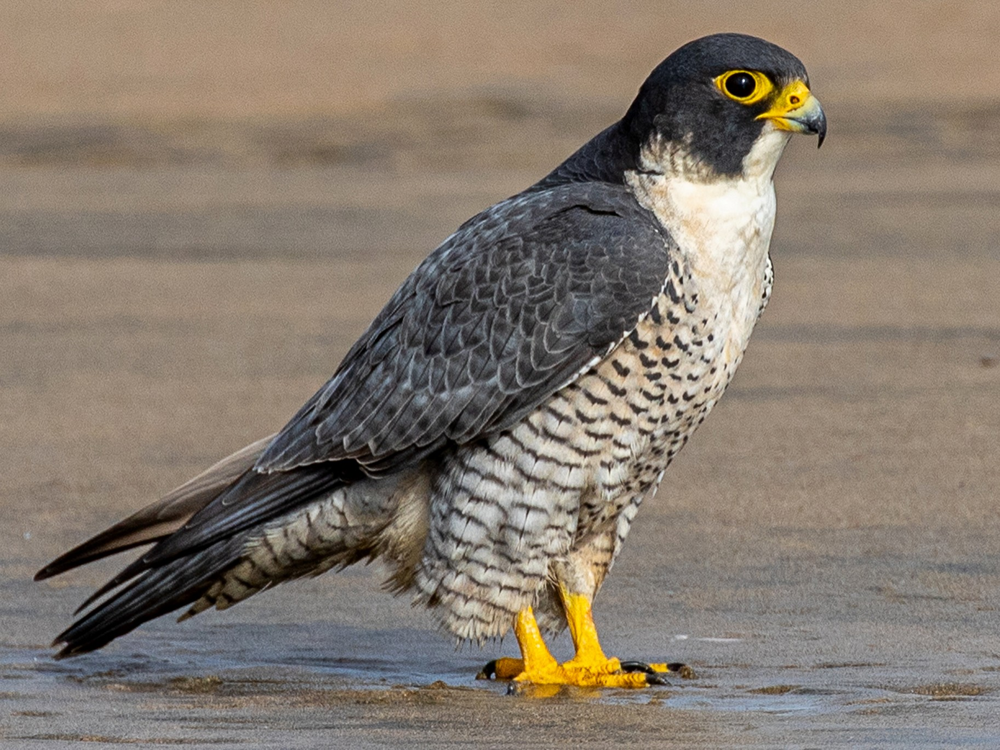
Credit: Macaulay Library © Cornell Lab of Ornithology ML303618951
Size: Kite-
Status: Uncommon winter visitor
Field characters: Large, powerful falcon with dark grey upperparts, barred
underparts, and distinctive black ’moustache’ marking.
Best seen at: Occasionally seen around tall buildings and open areas of
campus.
Habits: Swift and agile hunter, known for spectacular aerial dives. Feeds mainly on
birds caught in flight.
Nesting: Does not breed on campus; winter visitor only.
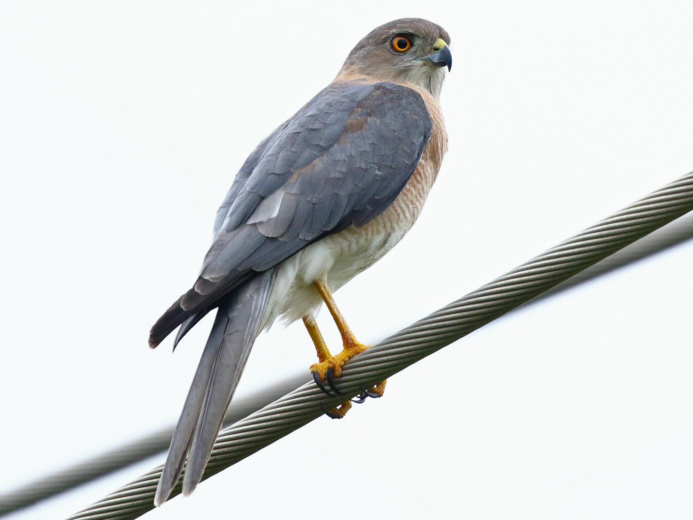
Credit: Macaulay Library © Cornell Lab of Ornithology ML126386591
Size: Myna+
Status: Common resident
Field characters: A small hawk with a distinctive red eye and a barred
chest. The upperparts are gray, and the underparts are white with fine rufous
barring.
Best seen at: Widely distributed across the Indian subcontinent, including the
University of Pune campus.
Habits: Prefers wooded areas and gardens. Feeds on small birds, mammals, and
insects.
Nesting: Breeds March to July. Builds nests in trees, using twigs and leaves. Clutch
of 3-4 pale bluish-white eggs. Female does most incubation for 28-30 days, male
provides food.

Credit: Macaulay Library © Cornell Lab of Ornithology ML614444237
Size: Bulbul+
Status: Common resident
Field characters: A medium-sized bird with a white face, throat, and
breast, and a dark brown body. It has a distinctive red patch on the base of its
bill.
Best seen at: Found throughout the Indian subcontinent, including the University
of Pune campus.
Habits: Prefers marshy areas and wetlands. Feeds on insects, small fish, and plant
matter.
Nesting: Builds nests in dense vegetation near water, using plant materials. Lays
4-6 creamy white eggs with reddish-brown spots. Both parents share incubation
duties for about 19-20 days and care for the chicks.

Credit: Macaulay Library © Cornell Lab of Ornithology ML126568571
Size: Myna+
Status: Very common resident
Field characters: A medium-sized heron with a brownish body and white wings.
It has a distinctive yellow bill and legs.
Best seen at: Found throughout the Indian subcontinent, including the University
of Pune campus.
Habits: Prefers wetlands, ponds, and marshes. Feeds on fish, frogs, and
insects.
Nesting: Breeds June to September. Builds nests in trees or shrubs near water,
using sticks and plant materials. Lays 3-5 pale blue-green eggs. Both parents incubate
for about 18-24 days and feed the chicks.

Credit: Macaulay Library © Cornell Lab of Ornithology ML304986701
Size: Crow+
Status: Uncommon resident
Field characters: A medium-sized heron with a black crown and back, gray
wings, and white underparts. It has red eyes and a stout bill.
Best seen at: Found throughout the Indian subcontinent, including the University
of Pune campus.
Habits: Prefers wetlands, ponds, and marshes. Feeds on fish, frogs, and
insects.
Nesting: Breeds June to September. Builds nests in trees or shrubs near water,
using sticks and plant materials. Lays 3-5 pale blue-green eggs. Both parents incubate
for about 24-26 days and care for the young.

Credit: Unknown - Unknown location Macaulay Library © Cornell Lab of Ornithology ML608663702
Size: Myna++
Status: Very common resident
Field characters: A medium-sized egret with white plumage and a yellow bill.
During the breeding season, it develops orange-buff plumes on its head, chest, and
back.
Best seen at: Found throughout the Indian subcontinent, including the University
of Pune campus.
Habits: Often seen near cattle, feeding on insects and small animals disturbed by
the grazing animals.
Nesting: Breeds June to September during monsoon. Builds nests in colonies, using
sticks and plant materials. Lays 3-4 pale blue eggs. Both parents incubate for about
23-26 days and feed the chicks.

Credit: Macaulay Library © Cornell Lab of Ornithology ML168489091
Size: Myna++
Status: Common resident
Field characters: A medium-sized egret with white plumage, a black bill, and
black legs with yellow feet. During the breeding season, it develops long, delicate
plumes on its head, chest, and back.
Best seen at: Found throughout the Indian subcontinent, including the University
of Pune campus.
Habits: Prefers wetlands, ponds, and marshes. Feeds on fish, frogs, and
insects.
Nesting: Breeds June to September. Builds nests in colonies, using sticks and plant
materials. Lays 3-5 pale blue-green eggs. Both parents incubate for about 21-25 days
and care for the young.

Credit: Macaulay Library © Cornell Lab of Ornithology ML308065631
Size: Myna+
Status: Very common resident
Field characters: A plump, grey-colored bird with iridescent neck feathers. Two
dark wingbars and a dark terminal tail band are distinctive features.
Best seen at: Found throughout the Indian subcontinent, particularly abundant in
urban areas including the University of Pune campus.
Habits: Highly adapted to urban life. Often seen in flocks, feeding on grains and
seeds on the ground.
Nesting: Breeds throughout the year. Nests in building ledges, window sills, and
other artificial structures, using twigs and small sticks. Lays 2 white eggs. Both
parents incubate for about 17-19 days and feed the chicks.

Credit: Macaulay Library © Cornell Lab of Ornithology ML621165796
Size: Myna
Status: Common resident
Field characters: A slim, long-tailed dove with pinkish-grey plumage and
distinctive black-and-white spotting on the nape.
Best seen at: Widespread across the campus and surrounding areas.
Habits: Usually seen in pairs or small groups, foraging on the ground for seeds and
grains.
Nesting: Builds a flimsy platform nest in trees and shrubs, often in dense foliage.
Lays 2 white eggs. Both parents incubate for about 14-16 days and care for the
chicks.
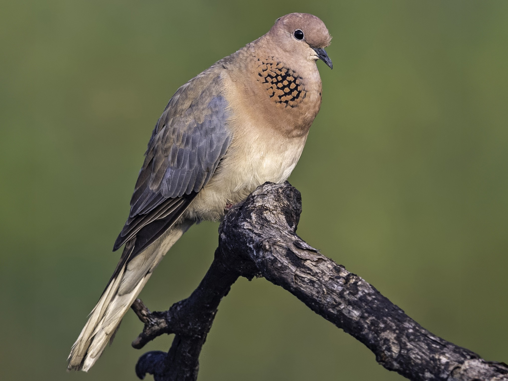
Credit: Macaulay Library © Cornell Lab of Ornithology ML622010668
Size: Myna-
Status: Common resident
Field characters: A small, delicate dove with pale brown plumage and a lilac
tinge to the neck. Black-and-red checkered pattern on neck sides.
Best seen at: Common throughout the campus, especially in open areas.
Habits: Often seen in pairs, feeding on seeds on the ground. Has a distinctive soft,
musical call.
Nesting: Creates simple twig nests in bushes and low trees. Lays 2 white eggs.
Both parents incubate for about 13-15 days and feed the chicks.

Credit: Macaulay Library © Cornell Lab of Ornithology ML126390831
Size: Myna++
Status: Common resident
Field characters: A large plover with distinctive red wattles in front of the eyes.
Brown wings, black head and breast, white face and underparts.
Best seen at: Found in open areas across the campus, particularly near water
bodies.
Habits: Known for its alarm call ”did-he-do-it”. Active during day and night, feeds
on insects and small invertebrates.
Nesting: Nests on the ground in shallow scrapes, often on gravelly or rocky areas.
Lays 3-4 olive-brown eggs with black spots. Both parents share incubation duties for
about 28-30 days and care for the chicks.

Credit: Macaulay Library © Cornell Lab of Ornithology ML126392811
Size: Crow-
Status: Common resident
Field characters: Male glossy black with red eyes; female brown with white
spots, barred underneath. Sexual dimorphism prominent.
Best seen at: Common throughout the campus, especially in wooded
areas.
Habits: Known for its distinctive ”ku-oo” call. Parasitizes crows’ nests. Feeds
mainly on fruits and berries.
Nesting: Brood parasite, lays eggs in nests of crows and other birds.

Credit: Macaulay Library © Cornell Lab of Ornithology ML142648801
Size: Myna-
Status: Common summer visitor
Field characters: Grey bird with dark grey breast and pale belly. Yellow eye-ring
distinctive.
Best seen at: Found in wooded areas across campus.
Habits: Rather secretive. Known for plaintive whistling calls. Feeds mainly on
insects.
Nesting: Brood parasite, laying eggs in warblers’ and tailorbirds’ nests.
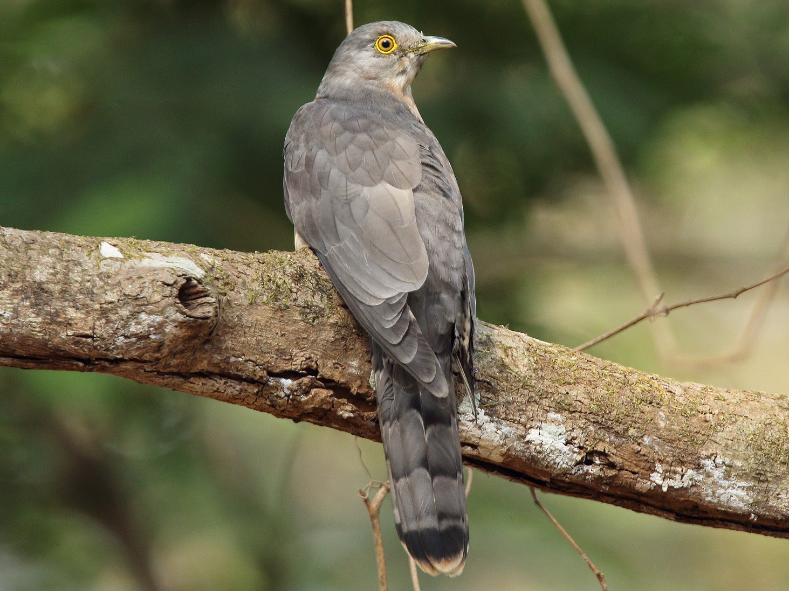
Credit: Macaulay Library © Cornell Lab of Ornithology ML133733311
Size: Myna++
Status: Common resident
Field characters: Hawk-like appearance with barred underparts. Yellow eye-ring.
Very similar to Shikra in flight.
Best seen at: Found throughout wooded areas of campus.
Habits: Known for distinctive ”brain-fever” call, especially in summer. Feeds on
insects and caterpillars.
Nesting: Brood parasite, primarily targeting babblers. Active during breeding
season March to July.

Credit: Macaulay Library © Cornell Lab of Ornithology ML126393221
Size: Crow
Status: Common resident
Field characters: Large, black bird with chestnut wings and long tail. Red eyes
and curved black bill are distinctive.
Best seen at: Found in dense vegetation across the campus.
Habits: Skulking habit, often seen walking on ground. Deep booming calls. Feeds
on insects, small vertebrates.
Nesting: Builds a domed nest in dense vegetation, usually close to the ground. Lays
3-5 white eggs. Both parents share incubation duties for about 15-16 days and care
for the chicks.
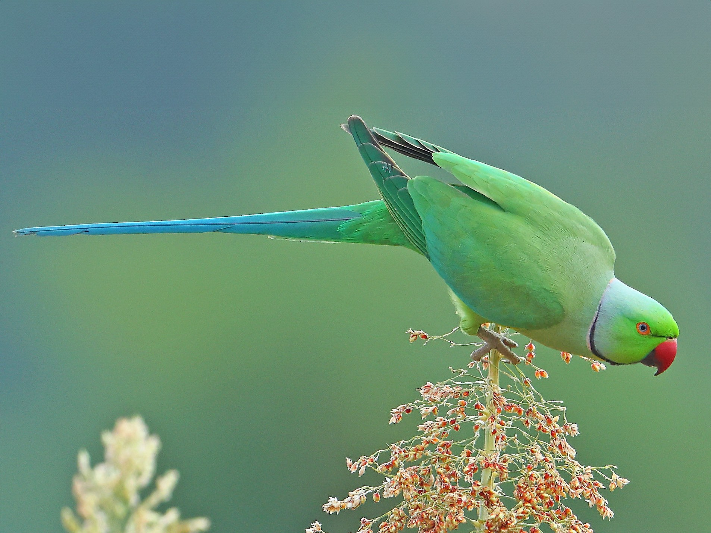
Credit: Macaulay Library © Cornell Lab of Ornithology ML622584055
Size: Myna++
Status: Very common resident
Field characters: Bright green parakeet with long tail. Males have pink and black
neck ring, females lack this feature.
Best seen at: Abundant throughout the campus, especially in wooded
areas.
Habits: Noisy, gregarious birds. Often seen in large flocks. Feeds on fruits, seeds,
and grains.
Nesting: Breeds December to May. Nests in tree hollows, often competing with
other cavity-nesters. Lays 3-4 white eggs. Both parents incubate for about 22-24 days
and feed the chicks.

Credit: Macaulay Library © Cornell Lab of Ornithology ML133717151
Size: Crow
Status: Uncommon resident
Field characters: Larger than Rose-ringed Parakeet, with massive red beak. Males
have pink and black collar.
Best seen at: Found in wooded areas of the campus, less common than other
parakeets.
Habits: Similar habits to Rose-ringed Parakeet but more wary. Feeds on fruits and
seeds.
Nesting: Nests in large tree cavities, preferring old growth trees. Lays 2-4
white eggs. Both parents incubate for about 23-26 days and care for the
chicks.

Credit: Macaulay Library © Cornell Lab of Ornithology ML133932211
Size: Myna
Status: Common resident
Field characters: Male has purple-red head, female bluish-grey. Both have green
body and yellow-tipped tail.
Best seen at: Regular visitor to wooded areas of the campus.
Habits: Usually in pairs or small flocks. More arboreal than other parakeets. Feeds
mainly on fruits and seeds.
Nesting: Nests in tree hollows, breeding season varies with location. Lays
3-4 white eggs. Both parents incubate for about 22-24 days and feed the
chicks.

Credit: Macaulay Library © Cornell Lab of Ornithology ML80511821
Size: Myna-
Status: Very common resident
Field characters: Small swift with white rump and forked tail. Overall dark
brown-black plumage.
Best seen at: Common throughout urban areas of the campus.
Habits: Aerial feeder, constantly on wing. Often seen in large groups swooping near
buildings.
Nesting: Colonial nester, builds mud nests under building eaves and bridges. Lays
2-3 white eggs. Both parents incubate for about 19-21 days and care for the
chicks.

Credit: Macaulay Library © Cornell Lab of Ornithology ML126573081
Size: Sparrow-
Status: Common resident
Field characters: Smaller than House Swift, slender with deeply forked tail.
Overall sooty brown appearance.
Best seen at: Found around palm trees across campus.
Habits: Very fast flier, rarely perches. Often seen around palm trees. Feeds
exclusively on aerial insects.
Nesting: Breeds year-round. Attaches small nest to palm frond underside using
saliva. Lays 2-3 white eggs.

Credit: Macaulay Library © Cornell Lab of Ornithology ML126564101
Size: Myna+
Status: Common resident
Field characters: Large kingfisher with bright blue back, chocolate brown head,
and white breast. Large red bill distinctive.
Best seen at: Found near water bodies and in gardens across campus.
Habits: Perches prominently, diving for prey. Feeds on fish, frogs, lizards, and large
insects.
Nesting: Breeds March to June. Nests in horizontal tunnels dug in earth banks.
Lays 4-7 white eggs. Both parents share incubation duties for about 20-22 days and
care for the chicks.
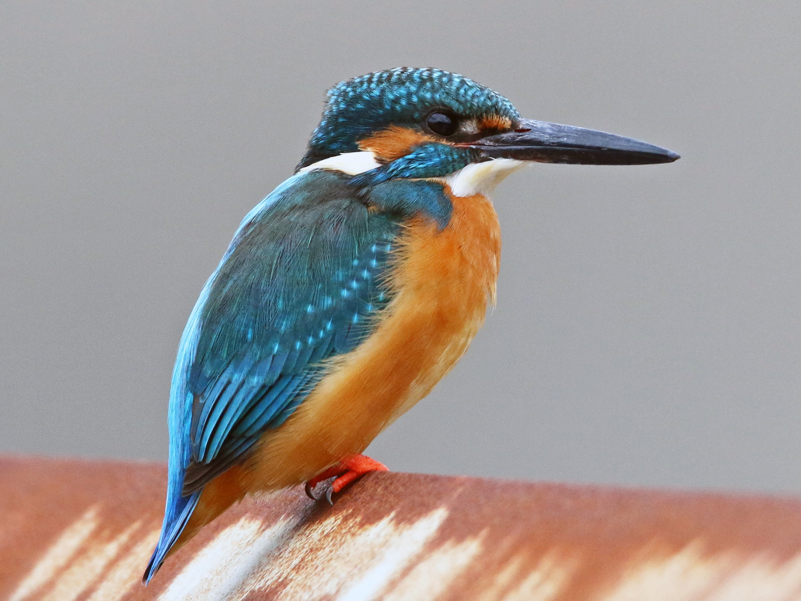
Credit: Macaulay Library © Cornell Lab of Ornithology ML168729731
Size: Bulbul-
Status: Common resident
Field characters: Small kingfisher with brilliant blue upperparts and orange
underparts. Long bill and short tail.
Best seen at: Found near water bodies and ponds on campus.
Habits: Perches low over water, dives vertically for fish. Often bobs head before
striking.
Nesting: Breeds February to April. Nests in tunnel in earth bank. Lays 5-7 white
eggs.

Credit: Macaulay Library © Cornell Lab of Ornithology ML126561671
Size: Sparrow+
Status: Common resident
Field characters: Slender green bird with blue throat patch and black eye-stripe.
Long central tail feathers distinctive.
Best seen at: Found in open areas with scattered trees across campus.
Habits: Graceful aerial hunter, catches insects in flight. Often perches prominently
on wires or bare branches.
Nesting: Breeds March to June. Nests in tunnels dug in earth banks. Lays 4-7 white
eggs.
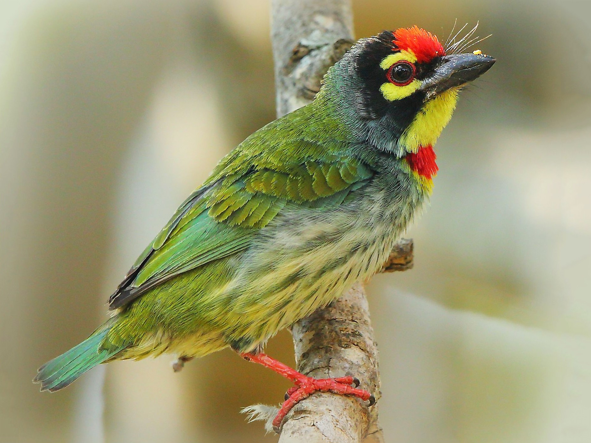
Credit: Macaulay Library © Cornell Lab of Ornithology ML126555661
Size: Bulbul+
Status: Common resident
Field characters: Small, green bird with crimson forehead and throat. Yellow
eye-patch distinctive.
Best seen at: Found in wooded areas throughout the campus.
Habits: Known for its metallic ’tuk-tuk-tuk’ call. Feeds mainly on fruits, especially
figs.
Nesting: Excavates nest holes in dead tree trunks or branches. Lays 2-4 white eggs.
Both parents incubate for about 13-15 days and feed the chicks.

Credit: Macaulay Library © Cornell Lab of Ornithology ML133734741
Size: Sparrow-
Status: Common resident
Field characters: Small, dark brown martin with slightly forked tail. Uniform
dusky plumage.
Best seen at: Found around buildings and rocky areas of campus.
Habits: Aerial feeder, catching insects in flight. Often seen gliding near
buildings.
Nesting: Builds cup-shaped mud nests on buildings and rock faces. Lays 2-3
white eggs. Both parents incubate for about 14-16 days and care for the
chicks.

Credit: Macaulay Library © Cornell Lab of Ornithology ML312652671
Size: Sparrow
Status: Common winter visitor
Field characters: Long, deeply forked tail. Blue-black above, rufous forehead and
throat, pale underparts.
Best seen at: Winter visitor to campus, seen in open areas.
Habits: Graceful flier, catching insects on wing. Often perches on wires.
Nesting: Does not breed on campus; winter visitor only.
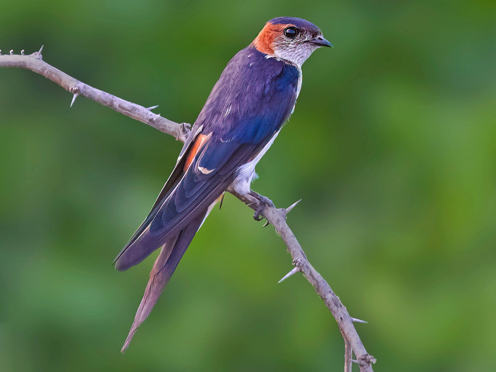
Credit: Macaulay Library © Cornell Lab of Ornithology ML625261168
Size: Sparrow
Status: Common resident
Field characters: Similar to Barn Swallow but with rufous rump and shorter tail
streamers.
Best seen at: Found throughout campus, especially near buildings.
Habits: Aerial feeder, often in mixed flocks with other swallows.
Nesting: Builds bottle-shaped mud nests under structures. Lays 3-4 white eggs.
Both parents incubate for about 14-16 days and care for the chicks.

Credit: Macaulay Library © Cornell Lab of Ornithology ML133941481
Size: Sparrow
Status: Common resident
Field characters: Distinctive long wire-like tail streamers. Glossy blue-black
above, white below.
Best seen at: Found near water bodies and open areas on campus.
Habits: Graceful flier, often perches on wires. Feeds on flying insects.
Nesting: Builds cup-shaped mud nests under bridges and buildings. Lays 2-3
white eggs. Both parents incubate for about 14-16 days and care for the
chicks.

Credit: Macaulay Library © Cornell Lab of Ornithology ML133755601
Size: Bulbul+
Status: Common resident
Field characters: Grey-brown above, whitish below with black mask through eye.
Long graduated tail.
Best seen at: Found in open areas with scattered trees.
Habits: Hunts from prominent perches. Impales prey on thorns. Feeds on insects,
lizards, and small birds.
Nesting: Builds neat cup-shaped nest in thorny bushes. Lays 3-6 white eggs with
brown spots. Both parents share incubation duties for about 15-16 days and care for
the chicks.

Credit: Macaulay Library © Cornell Lab of Ornithology ML258102271
Size: Myna+
Status: Common resident
Field characters: Male bright yellow with black wings and tail; female duller
greenish.
Best seen at: Found in wooded areas across campus.
Habits: Shy bird, keeps to canopy. Melodious flute-like calls. Feeds on fruits and
insects.
Nesting: Builds hammock-like nest suspended in tree fork. Lays 2-4 white eggs
with reddish-brown spots. Both parents share incubation duties for about 14-16 days
and care for the chicks.

Credit: Macaulay Library © Cornell Lab of Ornithology ML126548371
Size: Myna+
Status: Common resident
Field characters: Glossy black bird with deeply forked tail. Strong hooked
bill.
Best seen at: Found throughout campus in open areas with trees.
Habits: Bold and aggressive. Often seen chasing other birds. Excellent aerial
hunter.
Nesting: Breeds March to July. Builds cup nest in outer branches. Lays 3-5 pinkish
eggs with red-brown spots.

Credit: Macaulay Library © Cornell Lab of Ornithology ML133717951
Size: Myna+
Status: Winter visitor
Field characters: Similar to Black Drongo but grey overall. Less deeply forked
tail.
Best seen at: Winter visitor to wooded areas of campus.
Habits: Less aggressive than Black Drongo. Catches insects in air and from
foliage.
Nesting: Does not breed on campus; winter visitor only.

Credit: Macaulay Library © Cornell Lab of Ornithology ML97324171
Size: Myna
Status: Very common resident
Field characters: Brown body with black head, yellow bill and legs. White wing
patches visible in flight.
Best seen at: Abundant throughout campus in all habitats.
Habits: Bold, adaptable bird. Often in pairs or groups. Omnivorous diet.
Nesting: Nests in holes in trees, buildings, and other structures. Lays 4-6
blue-green eggs. Both parents share incubation duties for about 13-15 days and care
for the chicks.

Credit: Macaulay Library © Cornell Lab of Ornithology ML126402031
Size: Myna
Status: Common resident
Field characters: Similar to Common Myna but greyer, with tuft of feathers at
base of bill. Orange-yellow bill and legs.
Best seen at: Found in wooded areas and gardens, less urban than Common
Myna.
Habits: Usually in pairs or small groups. More arboreal than Common Myna. Feeds
on insects and fruits.
Nesting: Breeds March to July. Nests in tree holes. Lays 4-5 pale blue
eggs.

Credit: Macaulay Library © Cornell Lab of Ornithology ML133728841
Size: Myna
Status: Common resident
Field characters: Distinctive buff-colored starling with black crest, grey wings,
and white underparts.
Best seen at: Found in wooded areas and gardens across campus.
Habits: Usually seen in pairs or small groups. Feeds on fruits, berries, and
insects.
Nesting: Breeds April to July. Nests in tree holes and building cavities. Lays 3-5
pale blue eggs.

Credit: Macaulay Library © Cornell Lab of Ornithology ML126371181
Size: Bulbul
Status: Common resident
Field characters: Striking black and white plumage in male, greyer in female.
Long tail often held upright.
Best seen at: Found throughout campus in wooded areas and gardens.
Habits: Bold and melodious songster. Feeds on insects and berries.
Nesting: Breeds March to July. Nests in tree hollows and building holes. Lays 4-5
greenish-white eggs with brown spots.
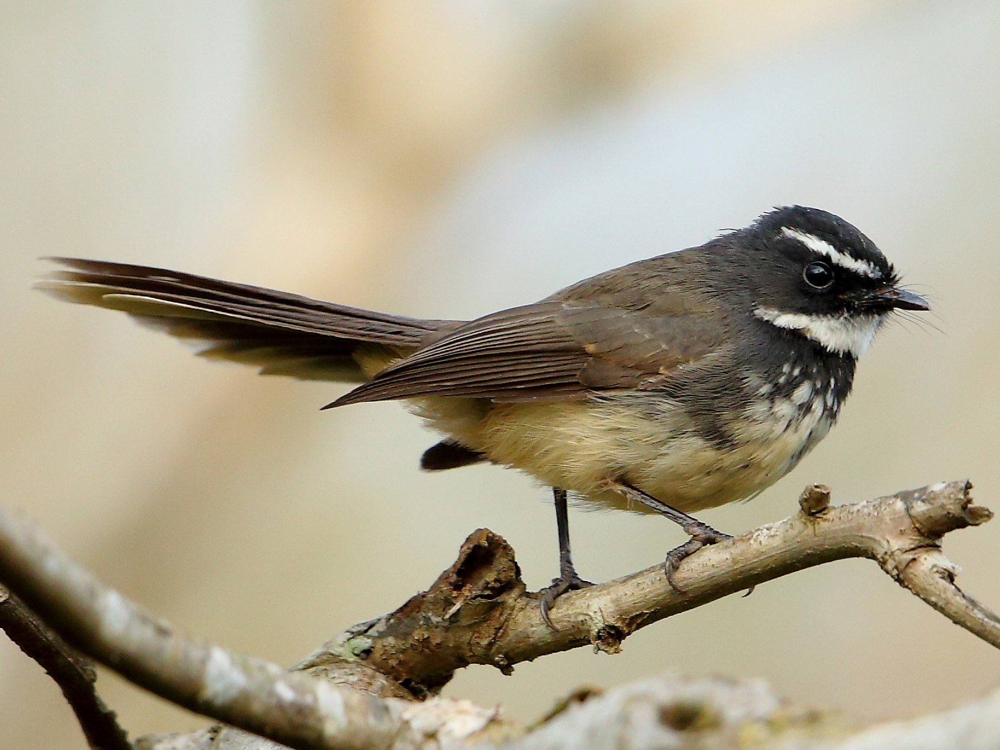
Credit: Macaulay Library © Cornell Lab of Ornithology ML143852871
Size: Sparrow-
Status: Common resident
Field characters: Small black and white bird with spotted breast, white eyebrow,
and fan-shaped tail often held spread.
Best seen at: Found in wooded areas and gardens with good tree cover.
Habits: Active and acrobatic, frequently fans tail while foraging. Makes short aerial
sallies to catch insects.
Nesting: Breeds mainly March to September. Builds neat cup nest on tree branch.
Lays 2-3 cream-colored eggs with reddish spots.

Credit: Macaulay Library © Cornell Lab of Ornithology ML126372681
Size: Bulbul-
Status: Common resident
Field characters: Male black with white rump and wing patches; female brown
with paler underparts.
Best seen at: Found in open areas with scattered bushes across campus.
Habits: Perches prominently on bushes and fences. Makes short flights to catch
insects.
Nesting: Breeds March to August. Builds cup-shaped nest in grass clumps or
bushes. Lays 3-4 pale blue-green eggs with rusty spots.
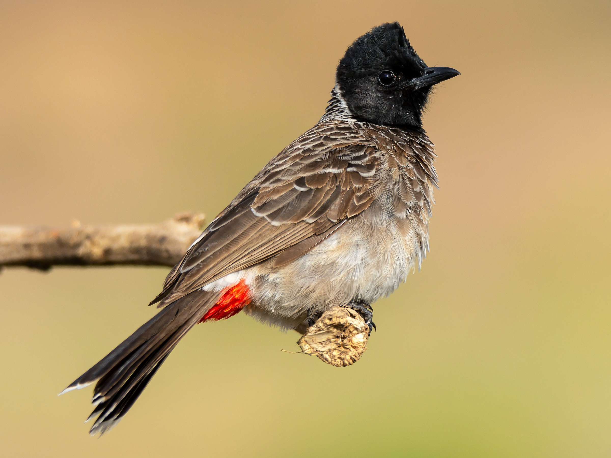
Credit: Macaulay Library © Cornell Lab of Ornithology ML300203931
Size: Bulbul
Status: Very common resident
Field characters: Dark brown-black with scaled pattern, distinctive red vent and
black crest.
Best seen at: Common throughout campus in all habitats.
Habits: Active and noisy. Often in pairs or small groups. Feeds on fruits and
insects.
Nesting: Breeds year-round, peak February to May. Builds cup-shaped nest in
bushes and small trees. Lays 2-3 pinkish-white eggs with red-brown spots. Both
parents incubate for 14 days and feed chicks.

Credit: Macaulay Library © Cornell Lab of Ornithology ML311377551
Size: Bulbul
Status: Common resident
Field characters: Brown above, white below with distinctive red cheek patch and
pointed black crest.
Best seen at: Found in wooded areas and gardens across campus.
Habits: Lively bird with pleasant calls. Often in pairs. Feeds on fruits and
insects.
Nesting: Builds neat cup-shaped nest in shrubs and small trees. Lays 2-3
pinkish-white eggs with red-brown spots. Both parents incubate for about 12-14 days
and care for the chicks.

Credit: Macaulay Library © Cornell Lab of Ornithology ML133742581
Size: Myna+
Status: Common resident
Field characters: Grey-brown bird with pale streaking. Long graduated tail and
curved bill.
Best seen at: Found in open scrub and gardens across campus.
Habits: Lives in noisy groups. Forages on ground, flicking leaves. Feeds on insects
and berries.
Nesting: Breeds March to September. Builds untidy nest in thorny bushes. Lays 3-4
turquoise blue eggs. Group members help in nesting duties.

Credit: Unknown - Unknown location Macaulay Library © Cornell Lab of Ornithology ML133939821
Size: Bulbul-
Status: Common resident
Field characters: Male bright blue above, rufous below. Female duller.
Best seen at: Found in wooded areas with good undergrowth.
Habits: Active bird, makes short flycatching sallies from perch. Sweet whistling
calls.
Nesting: Breeds April to July. Builds neat cup nest in tree hollow or cleft. Lays 3-4
pale eggs with brown spots.
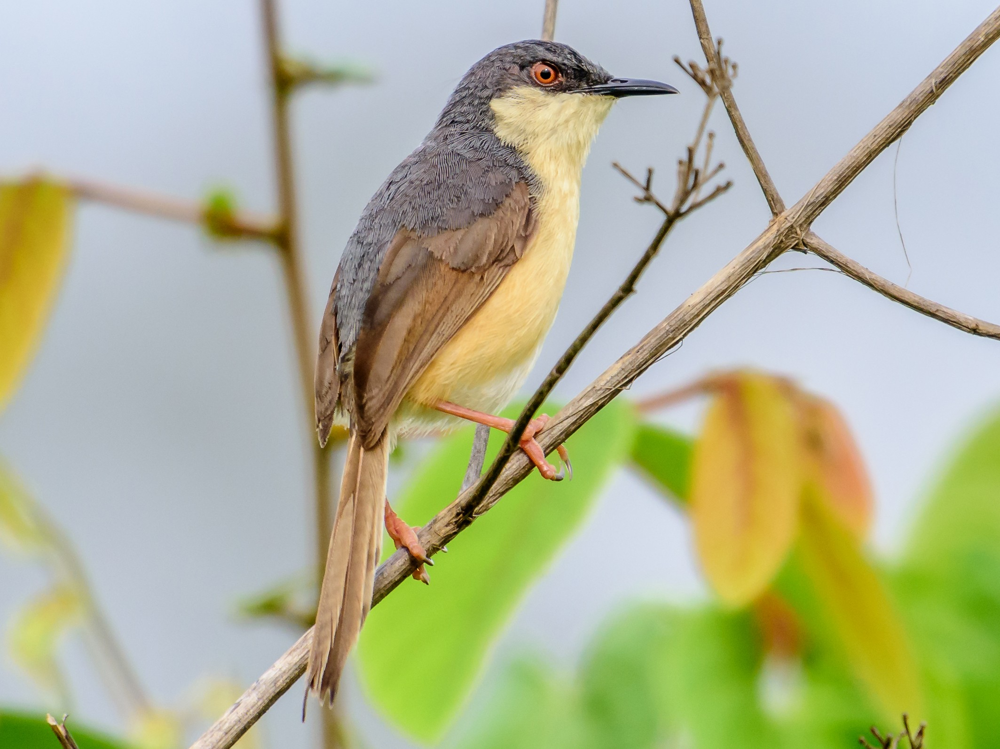
Credit: Macaulay Library © Cornell Lab of Ornithology ML126403561
Size: Sparrow-
Status: Common resident
Field characters: Ash-grey above, whitish below. Long graduated tail often held
cocked.
Best seen at: Found in gardens and scrub throughout campus.
Habits: Active bird, moves through vegetation making harsh calls.
Nesting: Breeds mainly June to September. Builds deep cup nest in grass or bushes.
Lays 3-5 brick-red eggs.
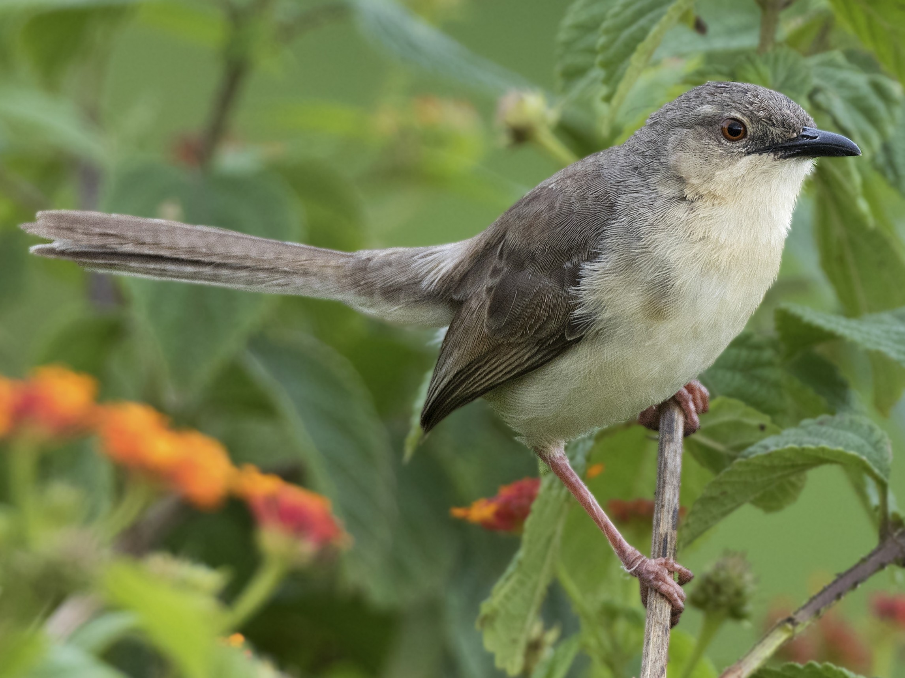
Credit: Macaulay Library © Cornell Lab of Ornithology ML150322831
Size: Sparrow-
Status: Common resident
Field characters: Grey-brown above, pale below. Darker than Ashy Prinia.
Best seen at: Found in scrub jungle and grassland areas.
Habits: Skulking habit, reveals presence by loud calls.
Nesting: Breeds June to September. Builds ball-shaped nest in grass clumps. Lays
3-5 greenish-white eggs.

Credit: Macaulay Library © Cornell Lab of Ornithology ML126406831
Size: Sparrow–
Status: Common resident
Field characters: Tiny warbler with long upright tail. Olive-green above, whitish
below, rufous crown.
Best seen at: Found throughout campus in gardens and areas with dense
bushes.
Habits: Active bird, constantly moving through vegetation. Loud ’to-wit to-wit’
calls.
Nesting: Breeds mainly May to September. Makes remarkable nest by stitching
living leaves together. Lays 3-5 reddish-white eggs with spots.

Credit: Macaulay Library © Cornell Lab of Ornithology ML256739411
Size: Sparrow-
Status: Common winter visitor
Field characters: Small warbler with grey-brown upper parts, white throat, and
pale underparts. Dark mask through eye.
Best seen at: Found in scrub and bushes across campus.
Habits: Active but skulking. Forages in bushes for insects. Has a characteristic
rattling call.
Nesting: Does not breed on campus; winter visitor only.
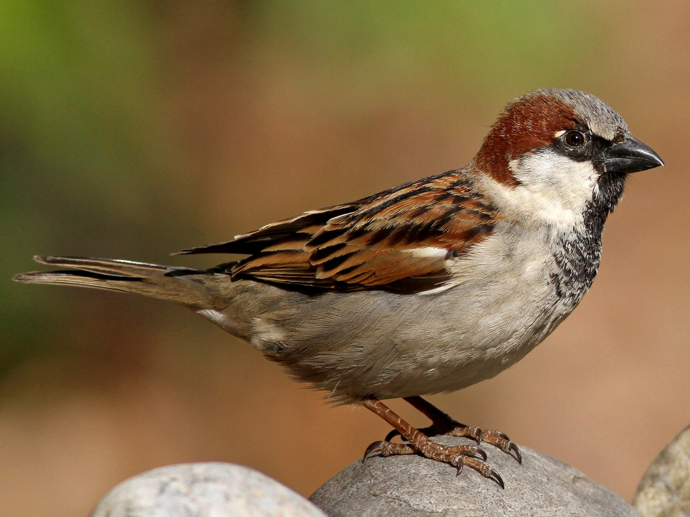
Credit: Macaulay Library © Cornell Lab of Ornithology ML305880301
Size: Sparrow
Status: Very common resident
Field characters: Male grey-brown with black bib and chestnut nape; female plain
brown.
Best seen at: Common around buildings and human habitation.
Habits: Gregarious, feeds mainly on grains and seeds.
Nesting: Breeds almost year-round. Nests in holes in buildings. Lays 4-6 white
eggs with brown spots.
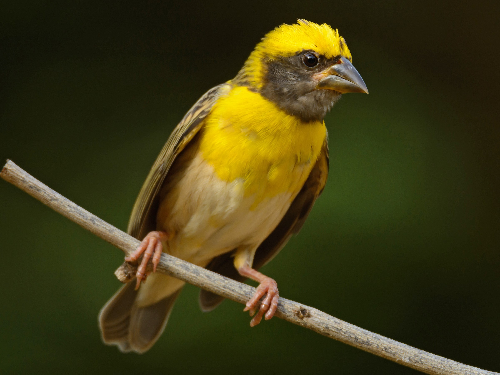
Credit: Macaulay Library © Cornell Lab of Ornithology ML133720591
Size: Sparrow
Status: Common resident
Field characters: Male bright yellow in breeding with brown back; female
sparrow-like.
Best seen at: Found in grassland areas and reed beds on campus.
Habits: Colonial nester. Males build elaborate pendant nests. Feeds on grass
seeds.
Nesting: Breeds during monsoon. Males build multiple helmet-shaped nests. Lays
2-4 white eggs.
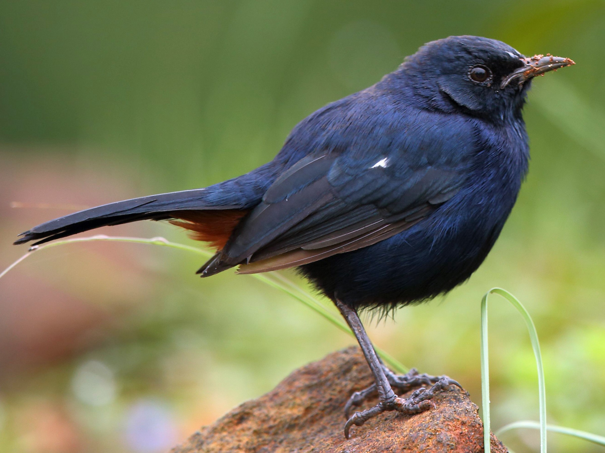
Credit: Macaulay Library © Cornell Lab of Ornithology ML126370921
Size: Sparrow
Status: Common resident
Field characters: Male glossy black with white wing patches, female brown.
Cocked tail characteristic.
Best seen at: Common in open areas and scrub throughout campus.
Habits: Active ground feeder, frequently flicks tail upward. Sweet songs and
calls.
Nesting: Breeds mainly March to September. Nests in holes in walls or ground.
Lays 2-4 white eggs with brown spots.

Credit: Macaulay Library © Cornell Lab of Ornithology ML126366191
Size: Sparrow-
Status: Common resident
Field characters: Tiny olive-green bird with distinctive white eye-ring. Yellow
throat and undertail.
Best seen at: Found in wooded areas and gardens across campus.
Habits: Active and acrobatic. Moves in small flocks through foliage. Feeds on
insects and nectar.
Nesting: Breeds March to September. Builds neat cup nest in tree fork. Lays 2-4
pale blue eggs.

Credit: Macaulay Library © Cornell Lab of Ornithology ML97646291
Size: Sparrow-
Status: Common resident
Field characters: Small brown finch with distinctive scaly pattern on breast. Short
thick bill.
Best seen at: Found in grassy areas and scrub throughout campus.
Habits: Social, feeds in small flocks on grass seeds. Sweet twittering calls.
Nesting: Breeds July to October. Builds large ball nest in thorny bushes. Lays 4-6
white eggs.
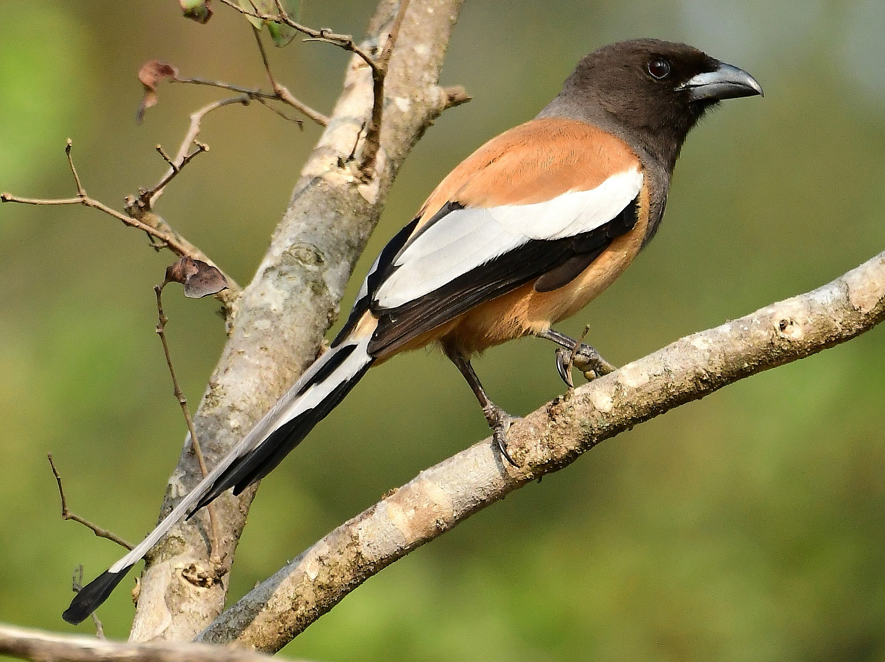
Credit: Macaulay Library © Cornell Lab of Ornithology ML126547471
Size: Myna++
Status: Common resident
Field characters: Large rufous and black bird with long graduated tail. Grey neck
and white-tipped tail distinctive.
Best seen at: Found in wooded areas across campus.
Habits: Bold and inquisitive. Often in small groups. Omnivorous, feeds on fruits,
insects, and small vertebrates.
Nesting: Breeds March to July. Builds neat cup nest in tree fork. Lays 3-5
greenish-white eggs with brown spots.

Credit: Macaulay Library © Cornell Lab of Ornithology ML126364891
Size: Crow
Status: Very common resident
Field characters: Grey and black crow with distinct grey neck collar.
Best seen at: Abundant throughout campus, especially near human activity.
Habits: Bold and opportunistic. Omnivorous diet.
Nesting: Breeds March to July. Builds platform nest in trees. Lays 4-5 pale
blue-green eggs with brown spots.

Credit: Macaulay Library © Cornell Lab of Ornithology ML85864161
Size: Crow+
Status: Common resident
Field characters: Larger than House Crow, all black with massive bill. More
solitary habits.
Best seen at: Found in wooded areas of campus and surrounding regions.
Habits: More cautious than House Crow. Often seen singly or in pairs. Omnivorous
diet.
Nesting: Breeds March to June. Builds large platform nest high in trees. Lays 3-5
pale greenish eggs with brown spots.
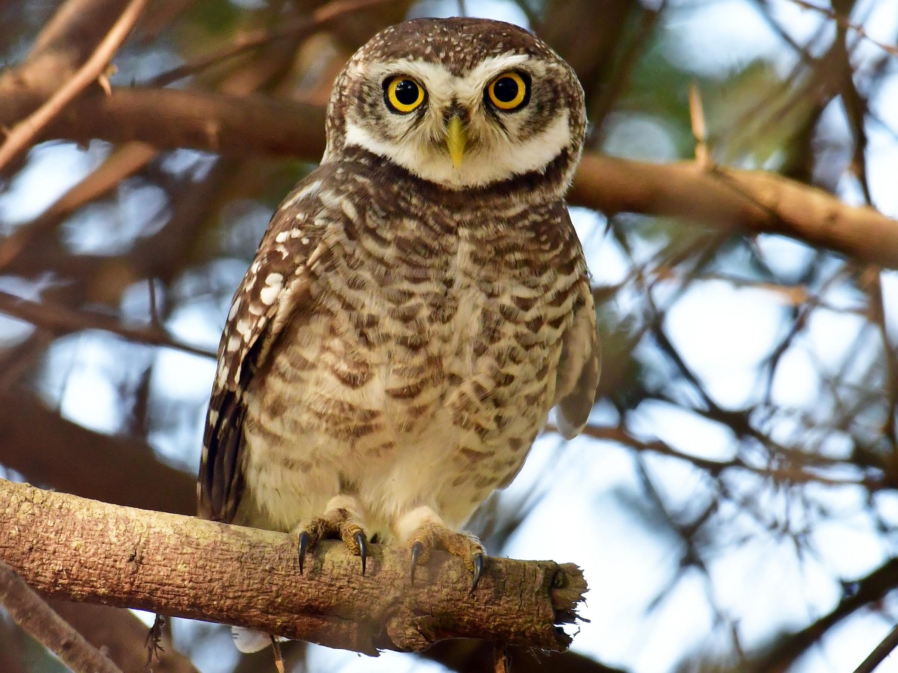
Credit: Macaulay Library © Cornell Lab of Ornithology ML133939511
Size: Myna+
Status: Common resident
Field characters: Small, chunky owl with white spotting. Large yellow eyes and
white eyebrows give it a stern expression.
Best seen at: Found in wooded areas and gardens across campus.
Habits: Active at dawn and dusk. Bobs head when alert. Feeds on insects, small
vertebrates.
Nesting: Breeds February to April. Nests in tree hollows and old buildings.
Lays 3-5 white eggs. Female incubates for 28-30 days while male provides
food.

Credit: Macaulay Library © Cornell Lab of Ornithology ML145988711
Size: Crow+
Status: Uncommon resident
Field characters: Large owl with distinctive mottled brown plumage. Round head
without ear-tufts, dark eyes, and yellow-green bill.
Best seen at: Found in wooded areas of campus with dense canopy cover.
Habits: Strictly nocturnal. Deep resonant calls at night. Feeds on rodents, birds, and
large insects.
Nesting: Breeds December to March. Nests in natural tree hollows. Lays 2-3 white
eggs. Female incubates while male provides food.

Credit: Macaulay Library © Cornell Lab of Ornithology ML133738511
Size: Crow
Status: Common resident
Field characters: Large grey bird with long tail and distinctive casque on bill.
Female has smaller casque.
Best seen at: Found in wooded areas across campus with large old trees.
Habits: Usually seen in pairs, moving from tree to tree. Feeds mainly on fruits,
especially figs.
Nesting: Breeds March to June. Female seals herself in tree cavity, leaving narrow
slit through which male feeds her and chicks. Lays 2-4 white eggs.

Credit: Macaulay Library © Cornell Lab of Ornithology ML126556251
Size: Myna++
Status: Common resident
Field characters: Crow-sized bird with brilliant blue wings and tail. Brown head
and back.
Best seen at: Found in open areas with scattered trees.
Habits: Conspicuous percher, makes dramatic rolling display flights. Feeds on large
insects, small lizards.
Nesting: Breeds March to July. Nests in tree hollows. Lays 3-5 white eggs. Both
parents incubate for about 17-19 days.

Credit: Macaulay Library © Cornell Lab of Ornithology ML265163661
Size: Myna+
Status: Common resident
Field characters: Male grey with black head; female grey with faint barring.
Best seen at: Found in wooded areas and gardens.
Habits: Methodically searches foliage for insects. Often joins mixed hunting
parties.
Nesting: Breeds April to July. Builds small cup nest on horizontal branch. Lays 2-3
grey-green eggs with brown spots.

Credit: Macaulay Library © Cornell Lab of Ornithology ML133939181
Size: Sparrow
Status: Common resident
Field characters: Male black and orange; female grey and yellow. Both have long
tails.
Best seen at: Found in wooded areas throughout campus.
Habits: Active, moves through canopy in small groups. Sweet whistling
calls.
Nesting: Breeds March to June. Builds tiny cup nest in tree fork. Lays 2-4 pale
green eggs with brown spots.

Credit: Unknown - Unknown location Macaulay Library © Cornell Lab of Ornithology ML126373401
Size: Sparrow–
Status: Common resident
Field characters: Tiny bird with grey-brown above, dirty white below. Short tail
and curved bill.
Best seen at: Found wherever flowering and fruiting trees occur.
Habits: Very active, flits rapidly between flowers. Feeds on berries and
nectar.
Nesting: Breeds year-round, peak March to May. Builds pear-shaped hanging nest.
Lays 2-3 white eggs. Both parents care for young.

Credit: Macaulay Library © Cornell Lab of Ornithology ML44950691
Size: Sparrow
Status: Common winter visitor
Field characters: Slender bird with long tail, grey upper parts and bright yellow
underparts. Shows constant tail-wagging behavior.
Best seen at: Found near water bodies and damp areas on campus.
Habits: Active forager, running and walking while wagging tail. Catches insects on
ground and in air.
Nesting: Does not breed on campus; winter visitor only.

Credit: Macaulay Library © Cornell Lab of Ornithology ML44586821
Size: Sparrow
Status: Common winter visitor
Field characters: Black and white bird with grey back, white face and underparts.
Shows characteristic tail-wagging.
Best seen at: Found in open areas, lawns, and near water bodies.
Habits: Walks gracefully on ground, wagging tail. Feeds on insects and small
invertebrates.
Nesting: Does not breed on campus; winter visitor only.
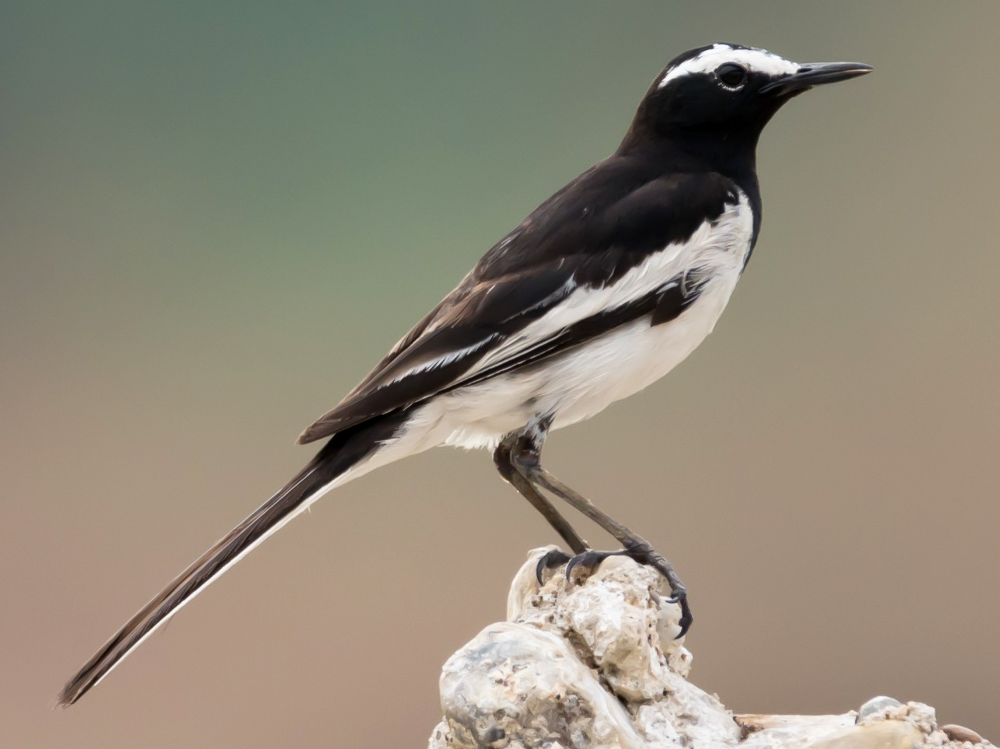
Credit: Unknown Unknown location Macaulay Library © Cornell Lab of Ornithology ML126385911
Size: Sparrow+
Status: Common resident
Field characters: Large black and white wagtail with prominent white eyebrow.
Long tail constantly wagged up and down.
Best seen at: Found near water bodies and open grassy areas across campus.
Habits: Active forager, running and walking while wagging tail. Often seen in
pairs.
Nesting: Breeds March to September. Builds cup nest in holes in walls or banks.
Lays 3-4 greyish-white eggs with brown spots.

Credit: Macaulay Library © Cornell Lab of Ornithology ML126386161
Size: Sparrow-
Status: Common resident
Field characters: Male breeding bright yellow and black; non-breeding and
female greenish-yellow. White wing-bars distinctive.
Best seen at: Found in wooded areas and gardens with good tree cover.
Habits: Active bird, constantly moving through foliage. Sweet melodious calls.
Feeds mainly on insects.
Nesting: Breeds April to September. Builds neat cup nest in tree fork. Lays 2-3
pinkish eggs with brown spots.

Credit: Macaulay Library © Cornell Lab of Ornithology ML133732751
Size: Sparrow-
Status: Common resident
Field characters: Small grey bird with black cap and throat, white cheeks, and
pale underparts.
Best seen at: Found in wooded areas and gardens across campus.
Habits: Active and acrobatic, often hanging upside down while foraging. Feeds on
insects and seeds.
Nesting: Breeds March to July. Nests in tree holes. Lays 4-6 white eggs with
red-brown spots.

Credit: Macaulay Library © Cornell Lab of Ornithology ML126385421
Size: Sparrow–
Status: Common resident
Field characters: Male breeding metallic purple-black; non-breeding and female
olive brown above, yellow below.
Best seen at: Found throughout campus wherever flowering plants occur.
Habits: Very active, hovers at flowers. Long curved bill for nectar feeding. Also
catches small insects.
Nesting: Breeds mainly February to May. Builds hanging purse-like nest. Lays 2-3
greenish-white eggs with brown spots.

Credit: Macaulay Library © Cornell Lab of Ornithology ML126401131
Size: Sparrow–
Status: Common resident
Field characters: Male has metallic purple-blue upper parts, yellow belly. Female
olive above, yellow below.
Best seen at: Found in gardens and wooded areas with flowering plants.
Habits: Very active, hovers at flowers like Purple Sunbird. Feeds on nectar and
small insects.
Nesting: Breeds year-round. Builds pendant nest with porch-like entrance. Lays 2
greenish-white eggs with brown spots.
______________________________________________________________________________________________________________________________________________________
_______________________________________________________________________________________________________________________________________________________________________________________________________________________________________________________________________